Nonlinear Filtering: EKF and UKF
SEL5917
Prof. Dr. Marcos Rogério Fernandes
September 22, 2026
Objectives:
The objectives of this class are to understand:
- Nonlinear Filtering;
- The Extended Kalman Filter;
- The Unscented Transformation;
- The Scaled Unscented Transformation;
- The Unscented Kalman Filter;
Probabilistic State Space Model
Bayesian Filtering

Bayesian Filtering
- Initialization: starts with a prior distribution $p(x_0)$;
- Prediction step (Chapman-Komogorov Eq.): $$ p(x_{k+1}|y_{0:k})=\int p(x_{k+1}|x_k)p(x_k|y_{0:k})dx_k $$
- Update step (Bayes' rule): $$ p(x_{k+1}|y_{0:k+1})=\frac{p(y_{k+1}|x_{k+1})p(x_{k+1}|y_{0:k})}{p(y_{k+1}|y_{0:k})} $$
Linear Systems
Dynamic State Space Model:
$$ \begin{aligned} x_{k+1}&=A_kx_k+B_ku_k+w_k,\quad w_{k}\sim\mathcal{N}(0,Q_{k})\\ y_{k+1}&=H_{k+1}x_{k+1}+\epsilon_{k+1},\quad \epsilon_{k+1}\sim\mathcal{N}(0,R_{k+1}) \end{aligned} $$Probabilistic State Space Model:
$$ \begin{aligned} x_{k+1}|x_k&\sim \mathcal{N}(A_kx_k+B_ku_k,Q_k)\\ y_{k+1}|x_{k+1}&\sim \mathcal{N}(H_{k+1}x_{k+1},R_{k+1}) \end{aligned} $$Joint Gaussian Distribution
Joint Gaussian Distribution
The Kalman Filter
Nonlinear Systems
Dynamic State Space Model:
$$ \begin{aligned} x_{k+1}&=f_k(x_k,u_k)+w_k,\quad w_{k}\sim\mathcal{N}(0,Q_{k})\\ y_{k+1}&=h_{k+1}(x_{k+1})+\epsilon_{k+1},\quad \epsilon_{k+1}\sim\mathcal{N}(0,R_{k+1}) \end{aligned} $$Probabilistic State Space Model:
$$ \begin{aligned} x_{k+1}|x_k&\sim \mathcal{N}(f_k(x_k,u_k),Q_k)\\ y_{k+1}|x_{k+1}&\sim \mathcal{N}(h_{k+1}(x_{k+1}),R_{k+1}) \end{aligned} $$Linear (Affine) Transformation
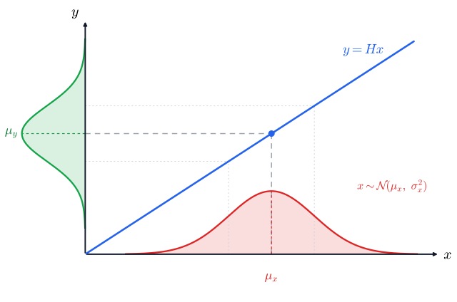
Nonlinear Transformation
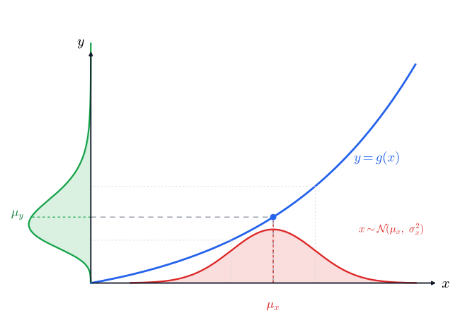
Nonlinear Transformation
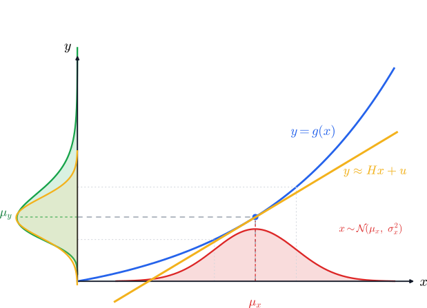
Nonlinear Systems
Nonlinear Systems
Nonlinear Systems
Nonlinear Systems
Nonlinear Systems
Nonlinear Systems
Nonlinear Systems
Nonlinear Systems
Nonlinear Systems
Nonlinear Systems
- $p(x_k|y_{0:k})\approx \mathcal{N}(\hat{x}_{k|k},P_{k|k})$
- $f_k(x,u_k)\approx f_k(\hat{x}_{k|k},u_k)+A_k(x-\hat{x}_{k|k})$
Nonlinear Systems
Nonlinear Systems
Nonlinear Systems
Nonlinear Systems
Nonlinear Systems
Nonlinear Systems
The Extented Kalman Filter (EKF)
Target Tracking with Radar
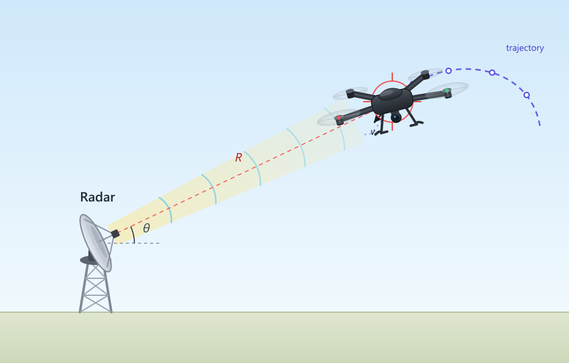
Target Tracking with Radar
Target Tracking with Radar
Target Tracking with Radar
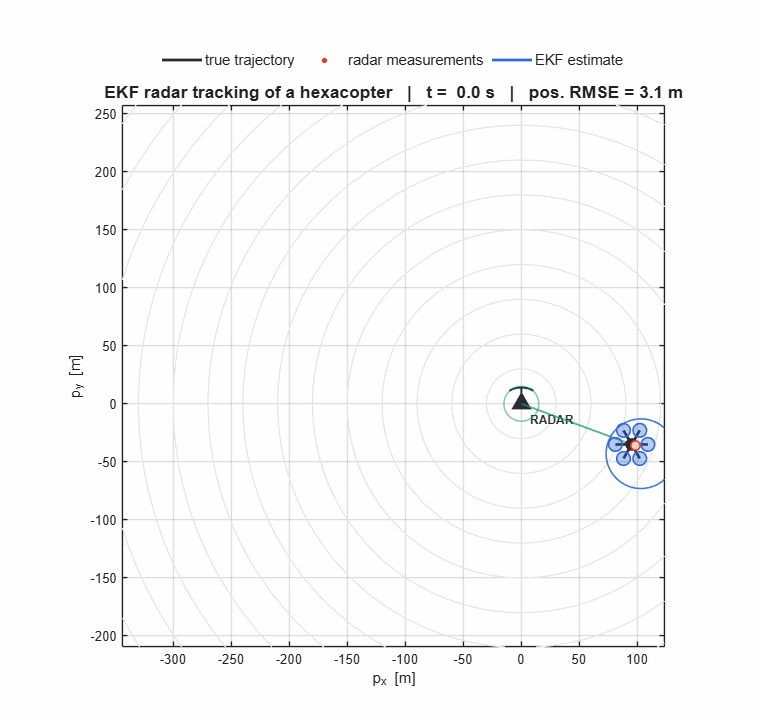
Nonlinear Systems (Non-additive noise)
Dynamic State Space Model:
$$ \begin{aligned} x_{k+1}&=f_k(x_k,u_k,w_k),\quad w_{k}\sim\mathcal{N}(0,Q_{k})\\ y_{k+1}&=h_{k+1}(x_{k+1},\epsilon_{k+1}),\quad \epsilon_{k+1}\sim\mathcal{N}(0,R_{k+1}) \end{aligned} $$Probabilistic State Space Model:
$$ \begin{aligned} p(x_{k+1}|x_k)&=?\\ p(y_{k+1}|x_{k+1})&=? \end{aligned} $$Nonlinear Systems (Non-additive noise)
Dynamic State Space Model:
$$ \begin{aligned} x_{k+1}&\approx f_k(x_k,u_k,0)+G_kw_k,\quad w_{k}\sim\mathcal{N}(0,Q_{k})\\ y_{k+1}&\approx h_{k+1}(x_{k+1},0)+M_{k+1}\epsilon_{k+1},\quad \epsilon_{k+1}\sim\mathcal{N}(0,R_{k+1}) \end{aligned} $$Probabilistic State Space Model:
$$ \begin{aligned} x_{k+1}|x_k&\sim \mathcal{N}(f_k(x_k,u_k,0),G_kQ_kG_k^\trp )\\ y_{k+1}|x_{k+1}&\sim \mathcal{N}(h_{k+1}(x_{k+1},0),M_{k+1}R_{k+1}M_{k+1}^\trp ) \end{aligned} $$The Iterated Extented Kalman Filter (IEKF)
The Iterated Extented Kalman Filter (IEKF)
Sigma Point Approximations
$$ y=g(x) $$
Given that $p(x)=\mathcal{N}(\hat{x},P_{xx})$ and $g:\mathbb{R}^n\to\mathbb{R}^p$ a nonlinear map, what is$$ \begin{aligned} \mathbb{E}\{y\}&=? \\ \text{var}(y)&=? \\ \text{cov}(x,y)&=? \end{aligned} $$
Sigma Point Approximations
$$ y=g(x) $$
From a First Order Taylor Approximation, we have $$ y\approx g(\hat{x})+\underbrace{\frac{\partial g}{\partial x}\Bigr|_{x=\hat{x}}}_{G}(x-\hat{x}) $$Sigma Point Approximations
$$ y=g(x) $$
From a First Order Taylor Approximation, we have $$ y\approx g(\hat{x})+G(x-\hat{x}) $$ Thus, $$ \begin{aligned} \mathbb{E}\{y\}&=g(\hat{x})\\ \text{var}(y)&=GP_{xx}G^\trp \\ \text{cov}(x,y)&=P_{xx}G^\trp. \end{aligned} $$Exemplo: Polar to Cartesian
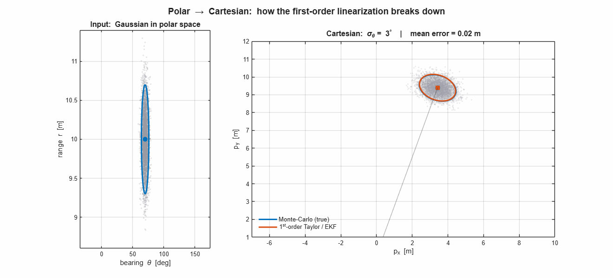
Sigma Point Approximations
$$ y=g(x) $$
Given that $p(x)=\mathcal{N}(\hat{x},P_{xx})$ and $g:\mathbb{R}^n\to\mathbb{R}^p$ a nonlinear map, what is $$ \begin{aligned} \mathbb{E}\{y\}&=\int y p(y) dy, \\ \text{var}(y)&=\int (y-\mathbb{E}\{y\})(\bullet)^\trp p(y)dy, \\ \text{cov}(x,y)&=\int (x-\mathbb{E}\{x\})(y-\mathbb{E}\{y\})^\trp p(x,y)dxdy \end{aligned} $$Sigma Point Approximations
Sigma Point Approximations
Sigma Point Approximations
- Gauss-Hermite Quadrature Approximation (QKF);
- Spherical Cubature Rule (CKF);
- Unscented Transformation (UKF);
- etc
Unscented Transformation
Unscented Transformation
Unscented Transformation
Unscented Transformation
Unscented Transformation
Symmetric Set — Sigma Points (2D)
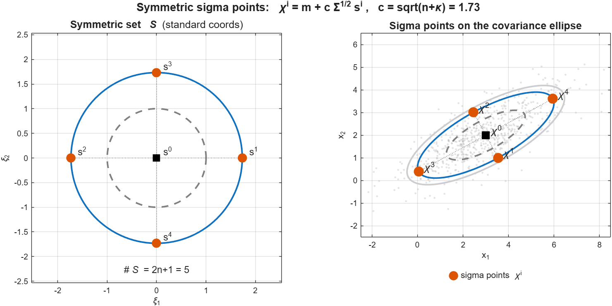
Unscented Transformation
Unscented Transformation
Unscented Transformation
Unscented Transformation
Unscented Transformation
Unscented Transformation
Unscented Transformation
Unscented Transformation
Unscented Transformation
Unscented Transformation
Unscented Transformation
Unscented Transformation
Unscented Transformation
Polar to Cartesian: Monte-Carlo vs EKF vs UT
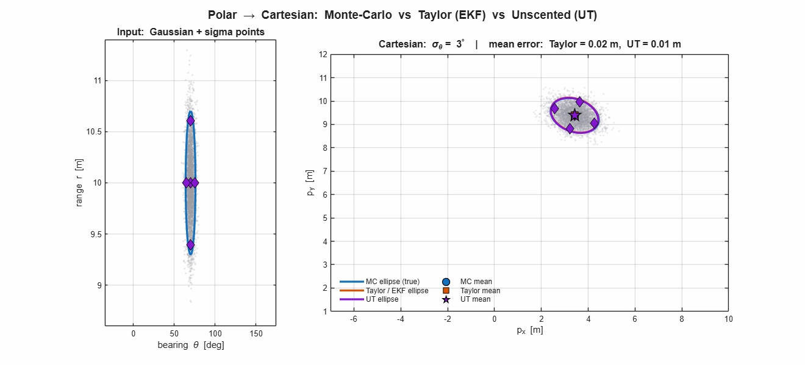
Cubature Transformation
The Kalman Filter
The Kalman Filter
Recall that $$ \mathbb{E}[x]=\int x p(x)dx\\ \Var(x)=\int (x-\mathbb{E}[x])(\bullet)^\trp p(x)dx\\ \Cov(x,y)=\int (x-\mathbb{E}[x])(y-\mathbb{E}[y])^\trp p(x,y)dxdy $$
The Unscented Kalman Filter (UKF)
The Unscented Kalman Filter (UKF)
The Unscented Kalman Filter (UKF)
The Unscented Kalman Filter (UKF)
The Unscented Kalman Filter (UKF)
UKF — Prediction & Update (Visual)
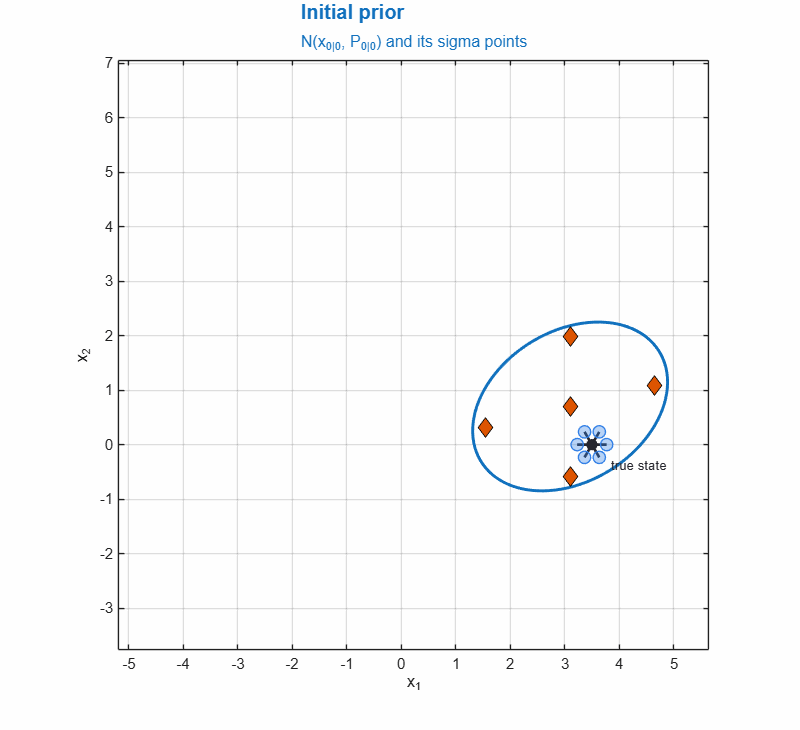
The Scaled Unscented Transformation
The Scaled Unscented Transformation
The Scaled Unscented Transformation
The Scaled Unscented Transformation
The Scaled Unscented Transformation
The Scaled Unscented Transformation
The Scaled Unscented Transformation
The Scaled Unscented Transformation
The Scaled Unscented Transformation
The Scaled Unscented Transformation
Target Tracking with Radar — EKF vs UKF
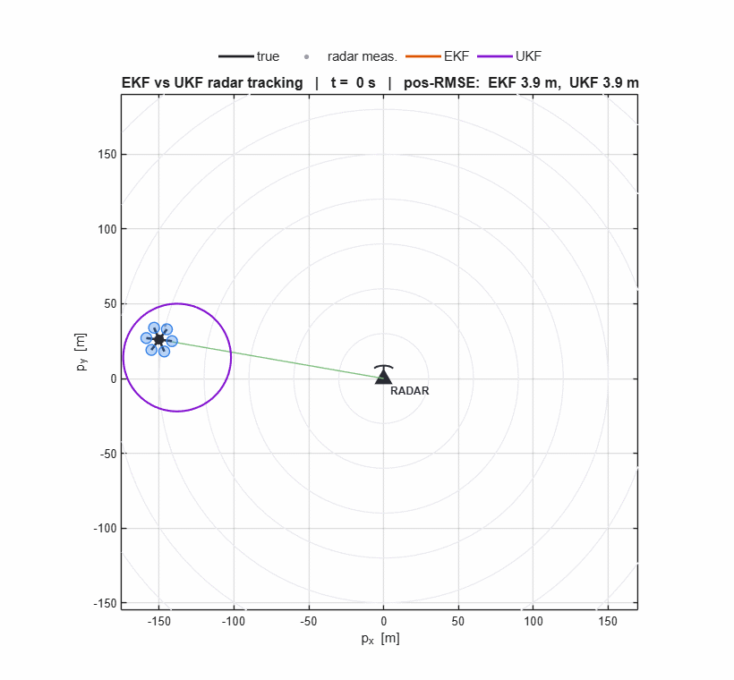
black = true · grey = radar meas. · orange = EKF · purple = UKF
EKF vs UKF — RMSE Comparison
| Metric | Raw radar | EKF | UKF |
|---|---|---|---|
| Position RMSE [m] | 4.72 | 3.90 | 3.89 |
| Speed RMSE [m/s] | — | 0.45 | 0.44 |
| Heading RMSE [deg] | — | 9.00 | 8.79 |
Even with the drone flying right over the sensor, the range/bearing geometry stays only weakly nonlinear, so the EKF and UKF are essentially tied (both beat raw radar). The UKF's advantage shows under strong nonlinearity — see the bearing‑only case next.
Bearing-Only Tracking — EKF vs UKF
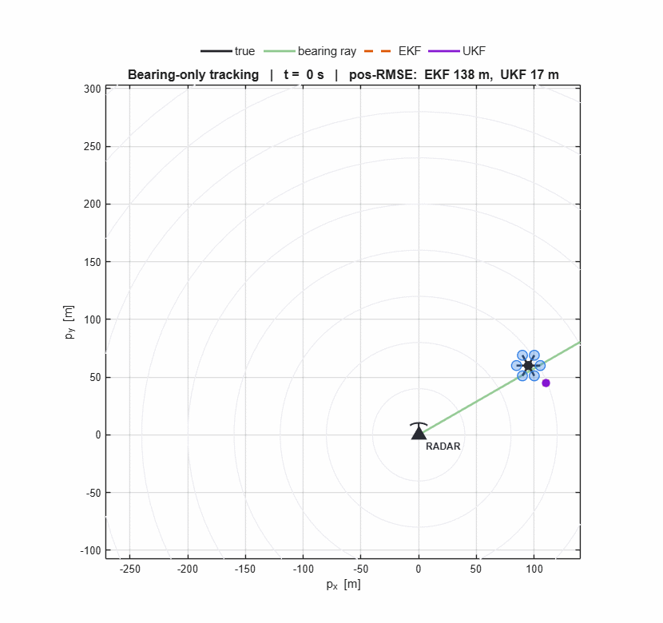
1-D Nonlinear Benchmark — Model
Classic Kitagawa (1987) / Gordon–Salmond–Smith (1993) benchmark: strongly nonlinear growth dynamics and a sign‑blind quadratic measurement.
EKF vs UKF — 1-D Nonlinear Benchmark
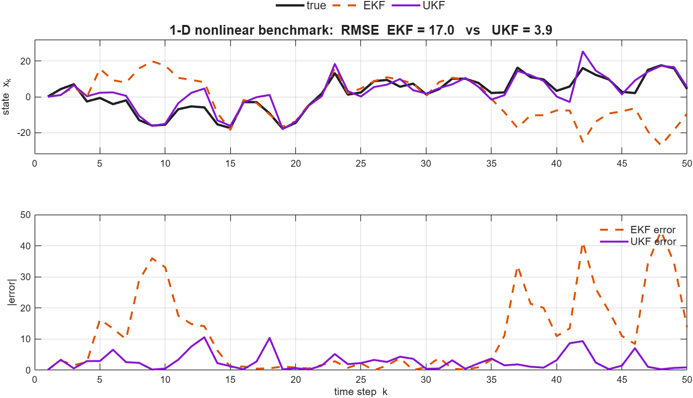
Tuning of Q and R — The Innovations
Scalar model $x_k=a\,x_{k-1}+w_k,\; y_k=x_k+v_k$ · innovation (residual) $e_k=y_k-\hat{y}_{k\mid k-1}$, with covariance $S_k=P_{k}^{-}+R$.
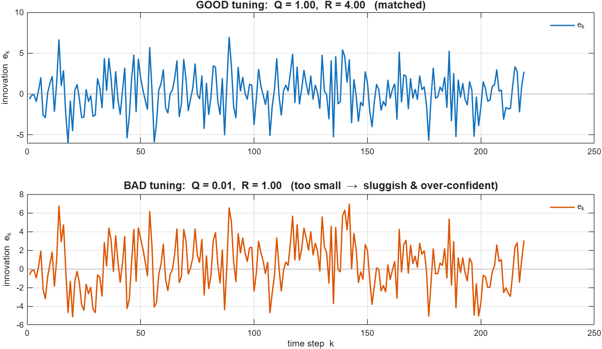
Matched $Q,R$ give small, erratic residuals; bad $Q,R$ leave large, slowly‑drifting residuals — a first sign the filter is mis‑tuned.
Are the Residuals White? — Autocorrelation
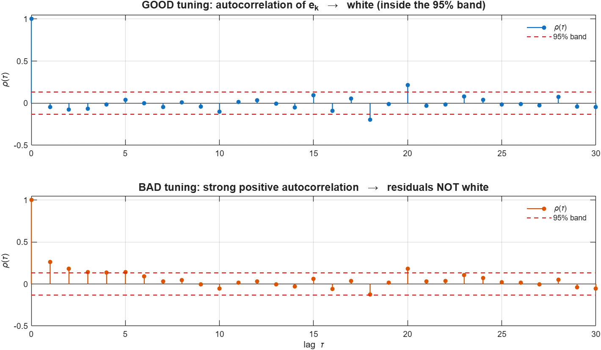
An optimally‑tuned filter leaves white innovations (all lags inside the 95% band). A positive‑autocorrelation tail means the residuals still carry structure the filter failed to use — $Q$ is too small and the estimate lags the state.
Normalized Innovation — Consistency ($\pm3\sigma$)
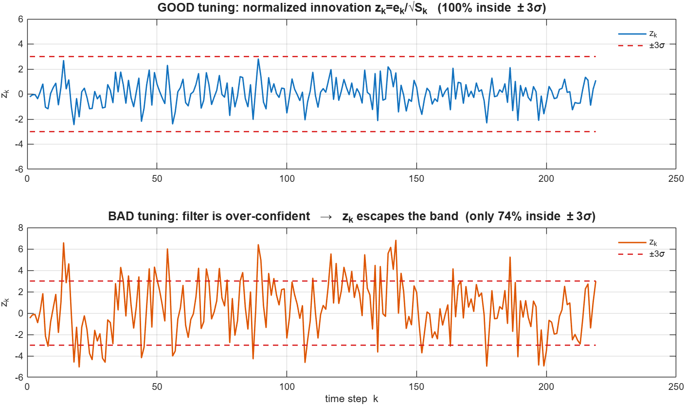
Normalizing by the filter's own covariance, $z_k=e_k/\sqrt{S_k}$, should be $\sim\mathcal{N}(0,1)$: about 99.7% inside $\pm3\sigma$. When $z_k$ escapes the band the filter is over‑confident ($S_k$ under‑estimates the true spread — $Q,R$ set too small).
Final Project
- Presentation of about 10min;
- For the enrolled students: LATEX report;
- Cover a topic related to the course;
- (Preferable) Choose a topic related to your research;
- Next week: use the time for the final project.